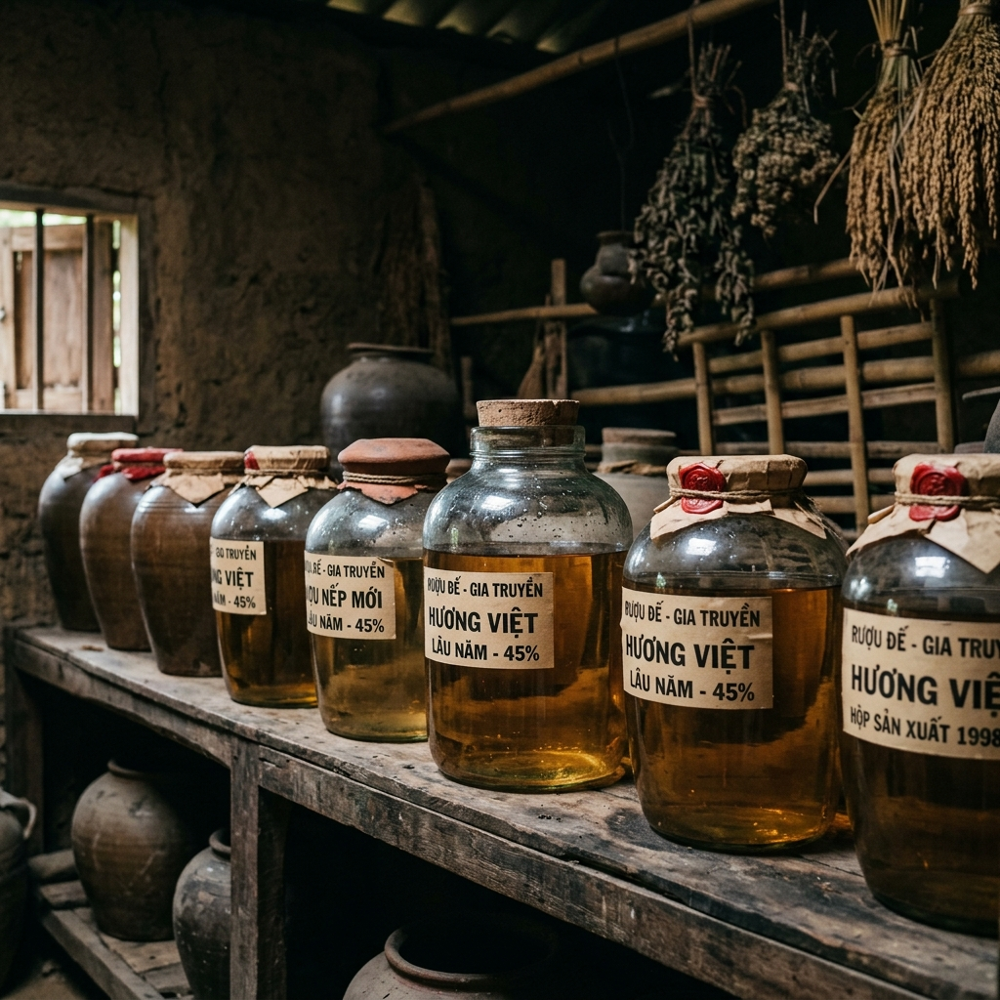

Quy trình sản xuất
Chọn nếp
Nếp được lựa chọn kỹ, sử dụng nếp mới, hạt đều, chắc và thơm để đảm bảo chất lượng rượu đầu ra luôn tốt nhất.
Ngâm và nấu
Nếp được vo sạch, ngâm khoảng 6 tiếng, sau đó đưa vào khay máy để nấu cơm chín đều từng hạt.

Ủ men
Cơm chín được trộn men theo tỷ lệ chuẩn và ủ trong thùng từ 10–14 ngày đến khi chín đều.
Chưng cất
Cơm rượu được chưng cất bằng nồi nấu thủ công, sử dụng bếp củi truyền thống để giữ trọn vẹn hương vị đặc trưng.

Ủ rượu nền
Rượu sau khi nấu được để ổn định trong 6 tháng trước khi lọc, giúp hương vị cân bằng và êm dịu hơn.
Xử lý sâm
Sâm sau thu hoạch được rửa sạch, phơi 3–4 nắng giúp dậy mùi thơm, sau đó được rửa lại bằng chính loại rượu nền thượng hạng.
Ngâm chum sành
Sâm được ngâm trong chum sành cùng rượu nền thượng hạng từ 1 đến 1.5 năm trước khi xuất xưởng.
Đóng chai
Sau khi đạt độ chuẩn về hương vị và nồng độ, sản phẩm được đóng chai với quy trình hợp vệ sinh.